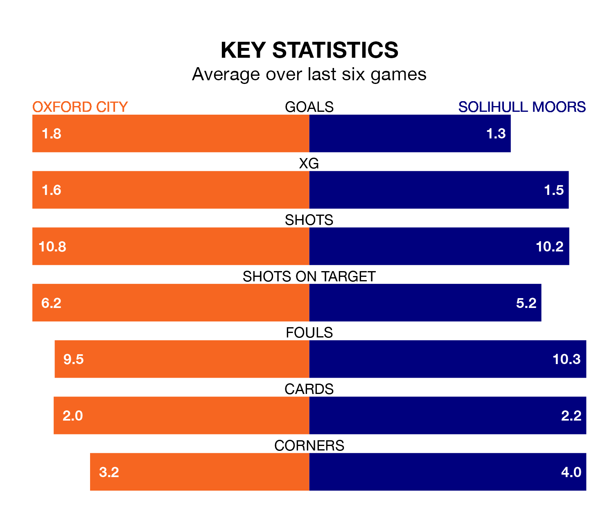

Solihull Moors are strong favourites to take all three points despite Oxford City's home advantage in Saturday's match at the RAW Charging Stadium.
*Betting Company* are offering odds of 1.99 on Solihull Moors sealing the win, with the visitors sitting fifth in National League table.
Oxford, who are 22nd in the league and 16 points behind the Moors, are priced at 2.75 to win. A draw is set at 3.3.
With 35 goals in 24 games so far this season, Oxford are scoring at the league's average rate with 1.5 goals per game. And they are conceding more than average, letting in 48 goals at a rate of 2.0 per game.
Solihull Moors are also average scorers, with 1.5 goals per game. They have conceded 1.4 goals per game.
City are in mixed form in National League, with two wins and a draw from their last six games.
With two wins and four losses over that period, the Moors's form is slightly worse – they have taken six points from 18, compared to the hosts' seven.
In Josh Kelly, the away side have one of the league's most on-form strikers so far this season. He has notched 11 goals in 21 appearances, to sit seventh in the scoring charts.
His goal rate of one every 136 minutes is quicker than that of Josh Parker, Oxford's top scorer with a goal every 199 minutes, and a total of nine goals in 21 games.
Oxford's last match was on December 16, a 2-1 loss against Boreham Wood, with Reece Fleet getting the goal for Oxford.
Solihull Moors lost 3-2 against Oldham Athletic last time out, also on December 16, with Kelly and Mark Beck on the scoresheet.
